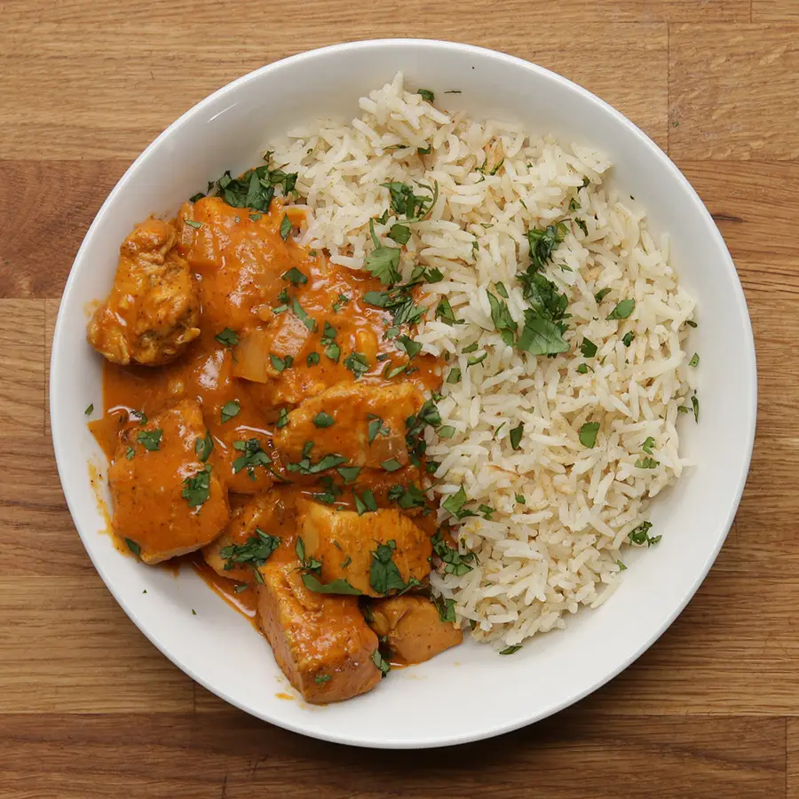

Creamy Chickpea Pasta With Spinach and Rosemary

Description
This simplified version of the Indian classic combines chicken, tomato sauce, and a slew of
aromatic spices all in one pot to make a flavorful dinner that’s just as good as the version you’ll get at restaurants — only way easier to make.
Serve it over rice with a bit of cilantro to balance the heat and dinner is done.
Ingredients
- 2lb boneless, skinless chicken breast
- Salt
- Pepper
- 14 oz tomato sauce
- 1 cup of water
- 1 cup heavy cream
Steps
- In a large bowl, season the chicken breast with salt, pepper,
1 teaspoon of chili powder, and the teaspoon of turmeric.
Let sit for 15 minutes to marinate.
- Melt 2 tablespoons of butter in a large pot over medium heat.
Brown the chicken, then remove from the pot.
- Melt another 2 tablespoons of butter in the pot, then add the onion, garam masala,
remaining teaspoon of chili powder, the cumin, ginger, garlic, cayenne, cinnamon, salt and pepper.
Cook until fragrant.
- Add the tomato sauce and bring to a simmer.
- Serve the chicken over rice and garnish with cilantro.
Return to homepage